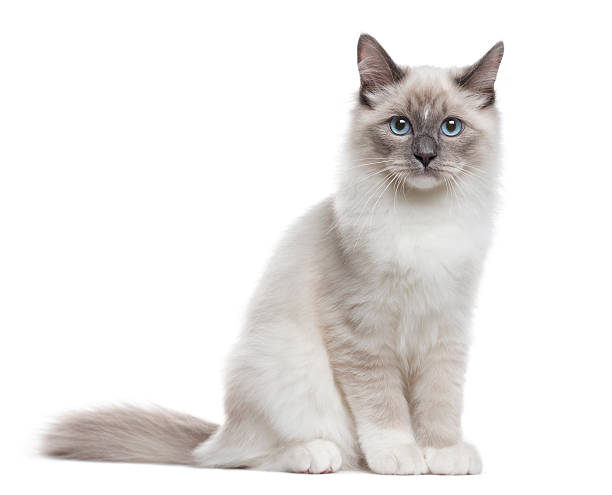

Why Adopt Pets with Medical Needs?
Many pets in our care require medical attention and special care, just like humans do. By adopting a pet with medical needs, you can provide them with the love, attention, and medical care they need to live a happy life. It’s a rewarding experience that can transform both your life and theirs.

Lucy the Labrador
Age: 4 years
Lucy needs ongoing treatment for her arthritis. She's sweet and loving!

Charlie the Cat
Age: 2 years
Charlie has a heart condition that requires medication. He's very affectionate!

Max the Beagle
Age: 5 years
Max has diabetes but is still very energetic and loves playtime!